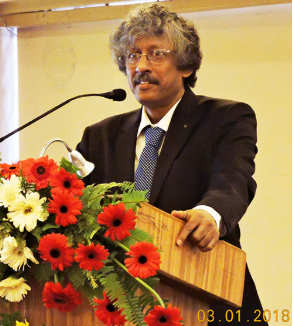

Founder Advisor, Centre for Sustainable Development & Resource Efficiency Management, Jadavpur University, Kolkata, India.
Prof. Dr. Sadhan Kumar Ghosh, Ph.D. (Engg.) is a globally recognized expert in sustainable development, circular economy, waste management, green manufacturing, and resource efficiency. He currently serves as Director General, Sustainable Development & Circular Economy Research Centre, ISWMAW, India, and Founder Advisor, Centre for Sustainable Development & Resource Efficiency Management, Jadavpur University, Kolkata.
With over four decades of academic, research, industrial, and policy experience, Prof. Ghosh has led more than 40 international and national research projects and collaborated with experts across 30+ countries. He has served as an international consultant and expert for organizations including UNCRD/UN DESA, the Asian Productivity Organization (APO), IGES Japan, and SACEP.
Former Dean of the Faculty of Engineering & Technology and Professor of Mechanical Engineering at Jadavpur University, he is widely recognized for his contributions to sustainable waste management, recycling, circular economy implementation, and environmental management systems.
He has authored 10 books, edited over 50 volumes, published more than 260 research papers and book chapters, and holds several patents in eco-friendly recycling technologies.
Prof. Ghosh is President of the International Society of Waste Management, Air and Water (ISWMAW) and Editor-in-Chief of the Journal of Solid Waste Technology and Management.
He has received numerous national and international honors, including the Distinguished Visiting Fellowship from the Royal Academy of Engineering, United Kingdom.
Research Projects Led
Countries Collaborated
Research Publications
Books Authored